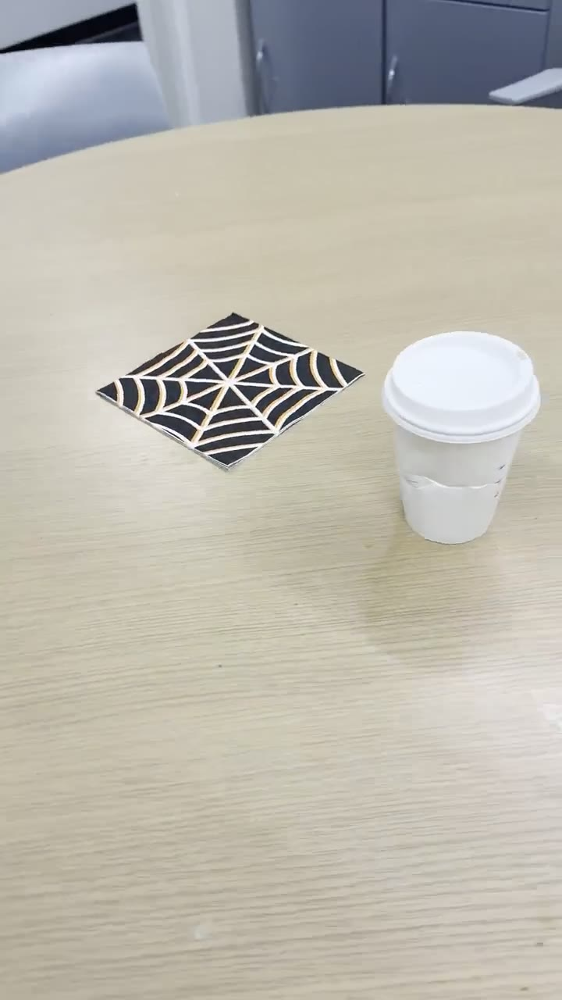
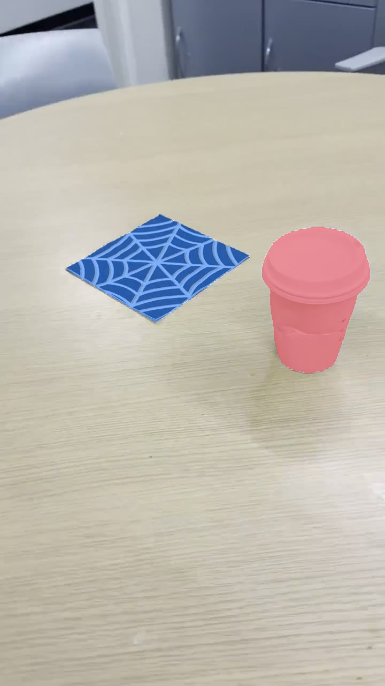
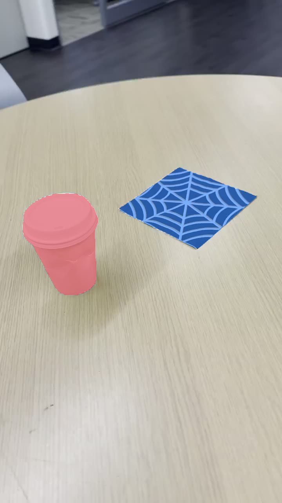
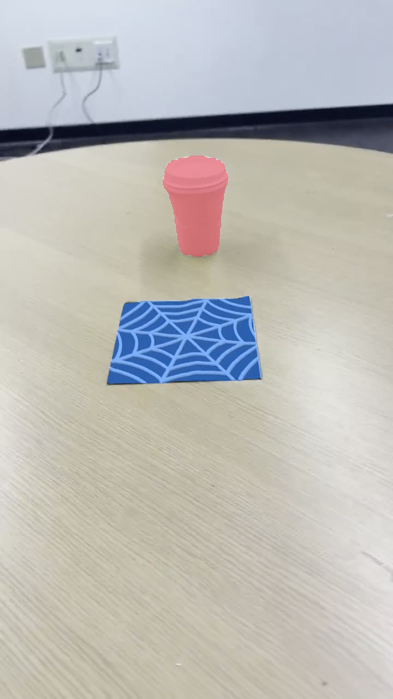
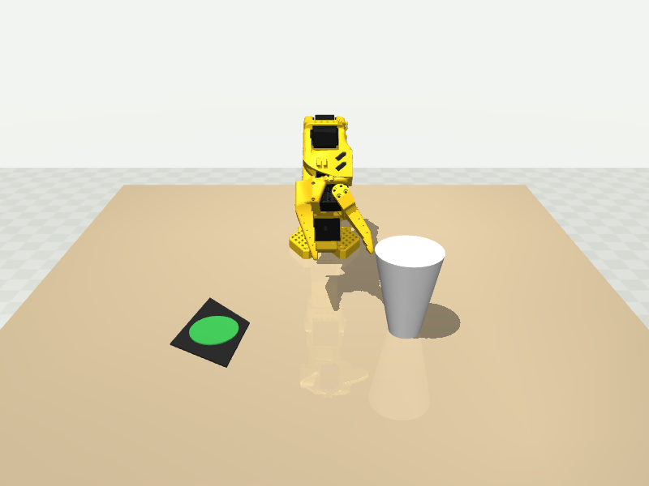
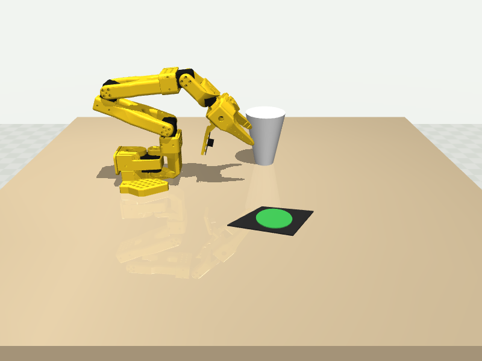

Film your table with a phone, say what the robot should do — get a metrically accurate MuJoCo scene, a scripted SO-101 controller, and a policy trained on its demos. Edit the code, hit compile, watch the physics.
24 frames are pulled from the clip and SAM 3 (on a remote GPU worker) finds each object the command mentions — 48/48 masks in under 20 seconds, no clicks. The cup is pink, the napkin blue.




No ArUco marker in the shot? The flat object's mask is fitted to a four-corner quad and used as the scale reference (12.7 cm, editable). From that single assumption the cup measures 7.77 cm wide — the real cup is 7.8 cm. False-positive marker detections on the napkin's printed pattern are rejected automatically.
Objects aren't placeholder boxes: the cup is a solid of revolution with its taper regressed from the silhouette, the napkin an extruded footprint — both placed where the video says they are, within reach of a simulated SO-101 arm. On the site, the scene sits next to a live code editor: change the controller, press compile & run, and the physics result plays back.


The scripted controller first checks the grasp against the measured shape — and reports the truth instead of shrinking the cup to pass:
| Check | Result |
|---|---|
| Object sizes recovered from one phone video | cup 7.77 cm vs 7.8 cm real |
| Segmentation coverage | 48/48 masks, 19.6 s on an L40S |
| Transport to goal (push) | 3.7 cm from the napkin centre |
| Upright arrival (<15°) | fails — physics of an empty tapered cup |
| Grasp of a 7.8 cm rim with a 6 cm gripper | infeasible, reported with evidence |
The whole task ships as a self-contained bundle — scene, controller, trainer, runner, trained policy. Download it, change the controller (or ask Nemotron to change it for you), upload it back, and the site runs your code with the trained model and shows the outcome.